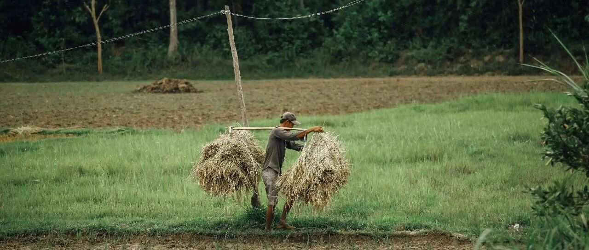

蛛丝马迹~
今天和朋友聊到香港持续下跌的楼市，聊着聊着，聊到了厦门。
厦门今年领跌全国，特别是岛内，跌妈不认。
当初放开岛外限购时，我说岛外会继续下跌，然后波及岛内，一语成谶。
我看了下岛内的几个建发楼盘，之所以选建发，是因为建发在厦门本地是一种信仰，号称“一生总要有一套建发房”，所以建发的价格往往同片区最高。
这得益于过去几十年它过硬的品质，不过现在的建发另当别论了，品质只剩个大门还能看看。
首先是号称厦门二手房价格天花板的五缘湾片区，建发中央湾区的价格，已经从9-10万跌到现在5万多、6万的成交价，其他的楼盘也跌得跟窜稀似的；
靠近五缘湾有个一手房新盘“云起东方”，是这次厦门降价引起舆论关注的重点:
楼面价4.5万，去年底开盘时6-6.5万的售价，这次据说售价低到3.9万，后来被辟谣，让子弹飞一会。
这个楼盘是建发、金茂、首开三方合作的，首开在环东海域3.3万楼面价的项目，1.5万起售的事，前几天我曾说过。
枋湖片区的二手房，建发中央美地和建发中央天成，特别是薛岭公园旁的中央天成，几乎是跌回2014-2015年的价格低点。
薛岭公园里，原来有薛岭公墓，后来拆迁改造了。
当年我去厦门时，陪一位朋友去看这楼盘，我问他，晚上疲惫时“举杯邀明月，对影成三人”（人有影子，👻没有）不会心里发毛嘛？
他表示“林北又不住，系（是）用来投机（资）的”。
岛外的二手房，翔安区的首开项目，六七年前一平米3万多的，现在二手房成交价腰斩；
海沧曾经的大热门，泰禾院子，高层住宅现在和房价高点比，也差不多腰斩，近期成交的两套中高楼层，成交单价1.73万。
更有意思的是，号称厦门顶豪的帝景苑，现在开始大规模启动分销，销售佣金一套80万。
帝景苑位于厦门筼筜湖旁，是个大平层项目，定位类似于“厦门的深圳湾一号”，从拿地开始，就是个有故事的项目。
在15-19年楼市火热时，不知道是推盘节奏的问题，还是市场上目标客群少的原因，完美错过楼市上行期。
也有可能是因为老板干涉太多，职业经理人没有什么施展空间。
我个人觉得大概是前者，接触过这家公司的老板，梁林伟是个比较自负的人，他打造过的另一个项目，是厦门的万年新盘、新房卖了十几年还没卖完的豪宅:云顶至尊。
这个豪宅的二手房，目前报价（不是成交价）只有3.6万起，远不如周边的刚需楼盘报价。
厦门的房价从跌跌不休，到爹爹不羞，中间的差距，大概是现实市场和统计口径的区别。
现实市场跌麻了，统计公布的数据是房价同比只下跌了10.6%，有些同志真是辛苦，大家要理解一下，他们已经尽力了。
… …
厦门的房价，深圳过去两年曾走过，就是不知道接下去会是哪个城市。
有人说，美联储降息后，国内的房价会大涨。嗯，还能意淫，说明还不错，最惨的是连意淫的劲都没有了。
美联储降息后，资金能不能大规模引导回流进入国内，还有很多长的路要走。
首先是继续深入改革开放。简单来说，“改革”，就是权力下放；“开放”，引进外资、利用外资。
嗯，自己琢磨。但我想说的是，对于资本来说，它们很诚实，也很现实:
要么给它足够的自由，要么给它足够的利润、要么给它足够的希望。
如果三者都没有，丫的，做慈善吗？
让你掏钱去买个十年不赚钱、有亏损风险、流动性差的资产，你愿意吗？
你都不愿意，还要求资本愿意，资本是钱多，但不是傻。
开放，就需要打造良好的营商环境，这点不仅对外资重要，对民营企业也很重要。
良好的营商环境，需要将“民粹”控制在一定程度，不能任由其泛滥。
泛滥的民粹主义，对营商环境显然是致命毒药。
天天有外行想指导你内行、动不动对你喊打喊杀，换作是你，你会放心、放开手脚、投入巨额真金白银去做投资？
什么时候，司马夹头、张公公、卢X元、观XX网等因为搞愚民和反智被禁了，对外资和民营企业喊打喊杀的人被禁了，那可以算得上是一个风向标，一个环境改善的迹象，蛛丝马迹。
这些搞民粹往往不择手段，甚至披着“爱国”的外衣，在搞“碍国”的勾当。各种传播谣言，最终削弱的，是某些公信力。
例如近期炒得沸沸扬扬的“159个国家采用金砖新支付系统”，这就是个假新闻。
没有好的经济支撑，别说什么房价、奢侈品价格下跌了，连百姓的生活都撑不住。
所以，不要搞民粹，搞民粹最终挨铁拳的，还是百姓，因为环境恶化，会影响到工作、就业、收入。
全世界本一体，对内改革，对外开放，有利于我们更好发展。
企业、就业、经济就像生态体系一样，看似强大，实则脆弱，维护它的良性循环极为不易，但轰然崩塌，很简单。
这种很简单的道理，大凡读过书的，都应该明白。
就这样吧。